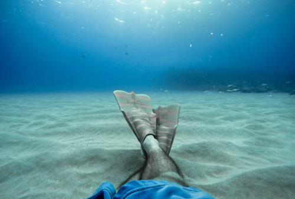
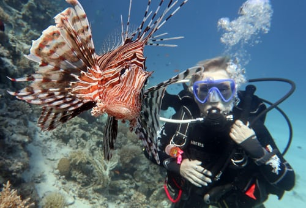
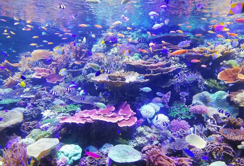

WHO WE ARE
We are a small diving club based in Otley, West Yorkshire. Training takes place Every Tuesday at 8pm at Prince Henry's Grammar School pool, club meetings held Fridays at 8pm at The Yew Tree public house opposite the school.
Divers of all experience levels welcome. For beginners we offer "try dives" so you can fully discover if diving is for you before committing to full membership.
Full training packages available enabling you to qualify at your own pace. We have monthly dive trips around the UK as well as 2 overseas dive a year
Prince Henrys School, training in school swimming pool
The Yew Tree, our club house
"Every time I slip into the ocean, it's like going home"
- Sylvia Earle, Marine Biologist
FURTHER INFORMATION
Club organiser Walter Wetsuit can be called on
Give it a go and discover a new way to....
relax.....
make new friends.....
and discover a whole new world.
